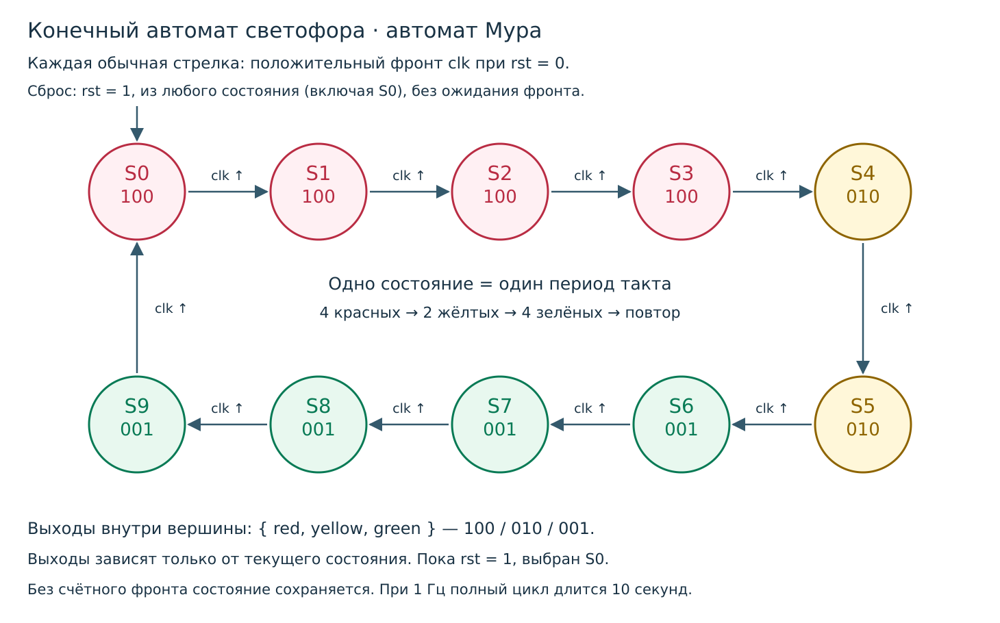

BB-FSM-01 · CMOS → RTL → FPGA → ASIC
Светофор Тимофея
Десять состояний, три функции ИЛИ, три микросхемы. Красный на четыре такта, жёлтый на два, зелёный на четыре. Полный урок: цоколёвка, три схемы, проверенные соединения, SystemVerilog и скрипты симуляторов.
Открыть упражнение